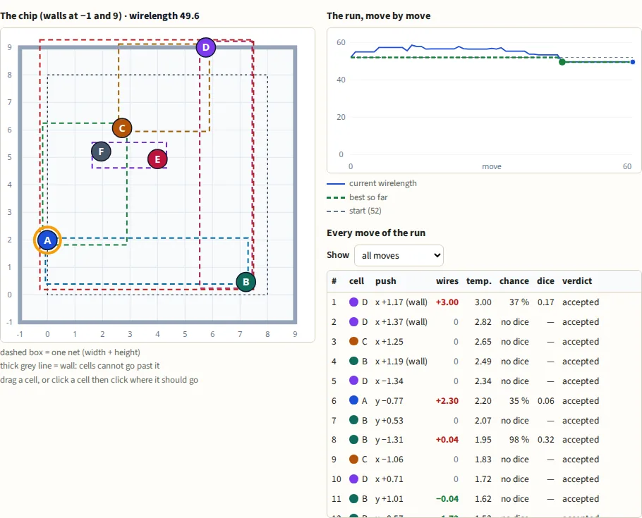

Lab 07 · Global placement
Simulated annealing placement
Six cells sit on a small chip, joined by six nets. Simulated annealing moves them at random, and keeps a worse move when a dice says yes, less and less often as the chip cools. This lab tells one run move by move, then lets you run it, drag cells yourself and count the moves.
Interactive lab

Run it and play with it, right in the browser:
- Press Apply SA preset: seed 42 with 60 moves gives 49.6, with 44 moves accepted and 16 rejected, the run of the lessons.
- Read the run move by move: a curve of the wirelength, and a log with the push, the chance, the dice and the verdict of every move.
- Drag the cells yourself, or pick one and use the arrows, and watch the six net boxes and the total change.
- Run any seed with any number of moves, and switch between the best placement and the final one.
Nine challenges, from Intro to Stretch, check what you built or counted, not the button you pressed. The annealer always starts from the starter placement, and moving a cell after a run cancels that run's numbers.
Implement (Track A)
Write mulberry32, total_hpwl and sa_place yourself, from the written rules, and check them against the goldens. The commands below run inside the course repository, from courses/learn_placement/module02-07-sa-placement/.
tiny_place.jsonThe six cells, six nets and the starter placement (52)
sa_place_check.pyGolden self-check; --impl checks your code, --vs-node compares with JavaScript
sa_node.mjsThe same annealer in JavaScript (used by --vs-node)
trace_seed42_60.jsonSeed 42, 60 moves, every move: the run of the lessons
trace_seed199_60.jsonSeed 199: ends worse than the start
trace_seed162_60.jsonSeed 162: a good run spoiled by its last move
trace_seed42_300.jsonSeed 42, 300 moves: 2.6 and a pile of cells
seeds_1_200.jsonSeeds 1 to 200: best, final, accepted, rejected
Examples — simulated annealing placement
Track A (implement). The instance is examples/tiny_place.json (six cells A to F, six nets), the answer key is
examples/sa_place_check.py, and the runs are in examples/trace_*.json and examples/seeds_1_200.json.
Every number below was printed by that checker (python3 examples/sa_place_check.py --show, --json).
Run it from this module folder; it needs only the Python standard library (--vs-node also needs node).
Goal
Move cells one small jog at a time and keep the jog when the wires get shorter, or, sometimes, when they get longer. That second part is the whole idea of simulated annealing: a method that only walks downhill gets stuck, a method that sometimes walks uphill (less and less often as the temperature T falls) can get out. The cost is HPWL, and the answer is the best placement seen, not the last one.
Definitions
- Cell: a point
(x, y)with a name. Six cells, A to F, always listed in this order. - Net: the list of cells a wire joins. Nets: A–B, C–D, A–C, B–D, A–B–C–D (4 pins), E–F.
- HPWL of a net = (largest x − smallest x) + (largest y − smallest y) of its cells. Cost = the sum over the six nets,
every net counted once with weight 1. The weights in
tiny_place.json(net 4 counts 5) are for the timing lab and are not used here. Starter placement: A (0,0) B (8,0) C (0,8) D (8,8) E (4,4) F (0,4) gives 52. - Move: pick one cell, one axis and a direction, jog it by 0.5 to 1.5 (not an integer), clamp it inside the walls
−1…9. Δ (written
dHpwlin the files) = HPWL after − HPWL before. - Temperature T: starts at 3 and is multiplied by 0.94 after every move, accepted or not. After 60 moves it is 0.0732.
- Accepted / rejected: a move that stays / a move that is undone. Accepted is not progress: of the 44 moves accepted on seed 42, 11 shortened the wires, 9 lengthened them and 24 changed nothing (free moves, Δ = 0: the cell moved, no net box changed).
- Best / final: the lowest HPWL seen at any time (and its positions) / the HPWL of the last placement. The function returns the best.
- Seed: an integer that fixes the whole run. One seed is one story.
API (what --impl looks for)
positions is {cell: {"x": .., "y": ..}}, cells a list of names in order, nets a list of lists of names.
def mulberry32(seed): # -> rand(): the next float in [0, 1)
def total_hpwl(nets, positions): # -> float
def sa_place(positions, cells, nets, *, moves=60, t0=3.0, cool=0.94, step=1.0, seed=42):
# -> {"positions": BEST positions, "hpwl": BEST hpwl, "accepted": int, "rejected": int, "final_hpwl": float}
Same signatures as common/solvers.py, so you can compare your function with the course's. Functions you have not written
yet are reported as SKIP. Never change the positions, cells or nets you are given.
The rules (written exactly; the course code never wrote them down)
- Random numbers:
mulberry32(seed), the short generator ofplacement-core.js, with no warm-up draw: the first call returns the first number. Seed 42 gives 0.6011, 0.4483, 0.8525, 0.6697, 0.1748. Avoid seeds 0 and 1 in your own tests: the second number of seed 1 is 0.0027, so the first axis is always x. - One move uses four numbers, in this order:
r1picks the cellcells[floor(r1 * 6)](uniform, by list order);r2 < 0.5means axis x, else y;r3 < 0.5means minus, else plus;r4gives the size1.0 * (0.5 + r4). The new coordinate is clamped to −1…9 (both coordinates of that cell). - Test: if Δ ≤ 0 the move is accepted and no random number is drawn. Otherwise draw
u(the fifth number) and accept whenu < e^(−Δ / T). - Bookkeeping: if accepted,
cur = HPWL after; ifcur < beststrictly, best and best positions are updated. ThenT = T * 0.94, always. - Result: best positions, best HPWL, accepted, rejected (and the final HPWL).
- Count of numbers drawn on seed 42: 4 × 60 + 25 (one per worsening proposal) = 265.
- Cell order is part of the spec: the same seed with the cells listed F…A is a different run (40.7859).
- Every cell moves, the pads too.
tiny_place.jsoncalls A and D "fixed pads", but this annealer never freezes them (freezing pads is the rule of the analytical labs). On seed 42, 20 of the 60 proposals were on A or D and 17 were accepted.
Pseudocode (this replaces the old ΔHPWL<0 line of the lab: with < the same code gives 35.39, not 49.58):
INPUT: start positions, cells in order, nets, seed, moves=60, T=3, cool=0.94
cur = HPWL(start); best = cur; best_pos = start
for move in 1..moves:
cell = cells[floor(r1 * n)]; axis = x if r2 < 0.5 else y; sign = -1 if r3 < 0.5 else +1
new = old + sign * (0.5 + r4); clamp the cell's x and y to [-1, 9]
delta = HPWL(after) - cur
if delta <= 0: accept # not worse: no dice
else: u = next number; accept if u < exp(-delta / T)
if accepted: cur = HPWL(after); if cur < best: best = cur; best_pos = positions
T = T * cool
OUTPUT: best_pos, best, accepted, rejected
GOLDEN seed=42, 60 moves -> best 49.5755 at move 45, final 49.5755, accepted 44, rejected 16
The probability of accepting a worse move, e^(−Δ / T)
| Δ \ T | 3.0000 (start) | 1.6158 (move 10) | 0.4688 (move 30) | 0.0732 (end) |
|---|---|---|---|---|
| 0.0 | 1.0000 | 1.0000 | 1.0000 | 1.0000 |
| 0.5 | 0.8465 | 0.7339 | 0.3442 | 0.0011 |
| 1.0 | 0.7165 | 0.5386 | 0.1185 | 0.0000 |
| 3.0 | 0.3679 | 0.1562 | 0.0017 | 0.0000 |
| 6.0 | 0.1353 | 0.0244 | 0.0000 | 0.0000 |
Same wires, same Δ: brave at the start, careful at the end. The first move of seed 42 is the Δ = 3, T = 3 cell.
Golden 1 — seed 42, 60 moves (the browser lab's run)
Move 1 by hand: r1 = 0.6011 → cell D; r2 = 0.4483 → axis x; r3 = 0.8525 → plus; r4 = 0.6697 → size 1.1697.
D goes from x = 8 to 9.1697, the wall stops it at x = 9. The nets C–D, B–D and A–B–C–D each get 1 wider: Δ = +3
(HPWL 52 → 55). p = e^(−3/3) = 0.3679; the draw u = 0.1748 is below it: accepted.
| Quantity | Value | Why it matters |
|---|---|---|
| start HPWL | 52 | A, B, C, D in the four corners |
| best HPWL | 49.5755 (the lab shows 49.6) | the exact value; the lab rounds to one decimal |
| best reached at | move 45 (B y −0.794 → 0.467, Δ = −3.782) | and never beaten after it |
| final HPWL | 49.5755 = best | on this seed only; see golden 2 |
| accepted / rejected | 44 / 16 | exact integers, not "about" |
| of the 44 accepted | 11 better, 9 worse, 24 free | accepted is not progress |
| of the 60 proposals | 11 better, 25 worse, 24 free | the 16 rejected are all among the 25 worse |
| moves stopped by a wall | 10 (5 accepted: moves 1, 2, 4, 13, 50; 5 rejected: 20, 22, 27, 37, 60) | the clamp is part of the spec: without it 42.4127 |
| highest HPWL during the run | 58.5768 (move 13) | the run first climbs from 52, then falls |
| (HPWL, T) at moves 0, 10…60 | (52, 3) (57.35, 1.616) (56.59, 0.870) (56.87, 0.469) (53.36, 0.252) (49.58, 0.136) (49.58, 0.073) | saPlace history (the lab draws every move) |
| numbers drawn | 265 = 4 × 60 + 25 | a port that draws on Δ = 0 drifts |
| proposals on the pads A, D | 20, of which 17 accepted | A ends at (0, 1.99), D at (5.76, 9) |
| best positions | A (0, 1.9895) B (7.2157, 0.4666) C (2.7113, 6.0676) D (5.7591, 9) E (4, 4.9394) F (1.9499, 5.2174) | what the function returns |
A few moves worth reading in --show: move 15 (A goes to x = −0.98, Δ = 2.945, p = 0.097, u = 0.612: rejected);
move 17 (Δ = 0.082, p = 0.929: a harmless worsening accepted); move 43 (Δ = 4.453, T = 0.223, p = 0.0000: rejected).
Golden 2 — best is not final (seeds 199 and 162)
| Seed | Best | Reached at | Final | Accepted / rejected | Peak HPWL | What it shows |
|---|---|---|---|---|---|---|
| 42 | 49.5755 | move 45 | 49.5755 | 44 / 16 | 58.58 | the two happen to be equal |
| 199 | 52.0000 = the start | never | 53.8714 | 37 / 23 | 60.46 | 37 moves accepted, none beat the start; the final is worse than the start; the function must return the start |
| 162 | 27.7525 | move 59 | 27.8871 | 41 / 19 | 55.19 | a good run whose last move (E y +0.82, Δ = +0.135, p = 0.178, u = 0.091) spoils it |
On seeds 1…200 the final HPWL is worse than the best one on 9 seeds: 6, 13, 54, 102, 118, 149, 156, 162 and 199.
Golden 3 — one seed is one story (seeds 1…200, 60 moves each)
| Quantity | Value |
|---|---|
| best HPWL, lowest | 13.7292 (seed 134) |
| best HPWL, highest | 52.0000 (seed 199) |
| median of the 200 best values | 36.0428 |
| five best seeds | 134: 13.7292, 114: 15.0626, 75: 15.5504, 84: 20.1749, 60: 20.6920 |
| seeds that beat seed 42 | 197 of 200 (only seeds 62: 49.9431 and 199: 52.0000 are worse) |
| seeds that never beat the start | 1 (seed 199) |
Seed 42 is the third-worst of the 200 runs. It is the reproducible story used everywhere in this lab; to judge a
random method, look at many runs. The per-seed table is examples/seeds_1_200.json.
Golden 4 — what the cost does not know (300 and 1000 moves)
| Run | Best HPWL | Accepted / rejected | 2×2 bin overflow |
|---|---|---|---|
| starter | 52 | – | 2 |
"golden compact" placement of tiny_place.json |
14 | – | 2 |
| SA seed 42, 60 moves | 49.5755 | 44 / 16 | 2 |
| SA seed 42, 300 moves (best at move 278) | 2.6119 | 104 / 196 | 4 |
| SA seed 42, 1000 moves | 2.3814 | 107 / 893 | – |
| all six cells on one point (4, 4) | 0 | – | 5 |
the overlap placement of tiny_place.json |
24 | – | 3 |
HPWL has no overlap rule: the 300-move run ends far below the "golden 14", so 14 is no floor, and with A, B, C, D within 0.5 of each other its bins are more crowded than the start. HPWL alone loves piling cells up; the density lab fixes that. (Bins: 2×2 over 0…8, capacity 1 cell per bin; overflow = the cells above capacity.)
Pitfalls — a port that breaks one written rule (seed 42, 60 moves)
| Port | Best | Accepted / rejected | Numbers drawn | Detected by the golden? |
|---|---|---|---|---|
| the rules above | 49.5755 | 44 / 16 | 265 | – |
| accept only when Δ < 0 (the old pseudocode), draw otherwise | 35.3928 | 46 / 14 | 282 | yes |
draw u on every move, even when Δ ≤ 0 |
35.7737 | 41 / 19 | 300 | yes |
| no walls at −1…9 | 42.4127 | 39 / 21 | 266 | yes |
| integer step 1 instead of 0.5…1.5 | 39.0000 | 34 / 26 | 208 | yes |
| cool T before the test | 49.5755 | 44 / 16 | 265 | no: same run here, so the order of cooling is not checked |
| cells listed F…A | 40.7859 | 39 / 21 | – | yes |
| nets reversed, or the positions dict in another key order | 49.5755 | 44 / 16 | 265 | same run: allowed |
These all look faithful and are all different programs. That is why the rules are written down.
Exploration (NOT golden): --freeze A,D
python3 examples/sa_place_check.py --show --freeze A,D keeps the pads where they are. The moving cell is picked among
the non-frozen cells only, in order A…F: cell = free[floor(r1 * n_free)] with free = [B, C, E, F]. Same seed, 60 moves:
best 51.0964 (move 59), 45 accepted / 15 rejected. It is an experiment, not a number the lab or the quiz relies on.
Run files for the animated lessons (--json)
python3 examples/sa_place_check.py --json --seed 42 --moves 60 prints one run; --write-examples rewrites the files
examples/trace_seed42_60.json, trace_seed199_60.json, trace_seed162_60.json, trace_seed42_300.json and
seeds_1_200.json. --vs-node regenerates them with the browser lab's JavaScript and compares.
Header: seed, moves, t0, cool, step, frozen, cells (in order), nets, walls {min -1, max 9}, hpwl_start, net_hpwl_start (one
value per net, in the order of nets), start, best, best_move (null when the run never beat the start), final,
best_positions, final_positions, accepted, rejected, draws, accepted_by_kind, proposed_by_kind, clamped, peak, history.
moves_list has one object per move: move (1-based), cell, axis, from and to (the cell's position before and after
the clamp; for a rejected move to is the position that was tried), proposed (the coordinate before the clamp), clamped,
delta (the signed jog), dHpwl (the change of cost, Δ), T (before cooling), p (accept probability, 1 when Δ ≤ 0), u
(null when no number was drawn), accepted, newBest, hpwl (current), best, and kind (better, worse or free,
from the sign of Δ). Floats are full precision; p agrees between Python and JavaScript within 1e-12 (exp differs in the last bit).
Try these
python3 examples/sa_place_check.py # all PASS
python3 examples/sa_place_check.py --show # rules, every move of seed 42, every table above
python3 examples/sa_place_check.py --show --seed 199 # the run that ends worse than the start
python3 examples/sa_place_check.py --show --seed 162 # the good run spoiled by its last move
python3 examples/sa_place_check.py --show --seed 42 --moves 300
python3 examples/sa_place_check.py --impl my_sa.py # YOUR mulberry32, total_hpwl, sa_place
python3 examples/sa_place_check.py --impl examples/wrong/strict_less.py # FAIL on purpose (35.393)
python3 examples/sa_place_check.py --vs-node # JavaScript and Python agree, bit for bit
examples/wrong/ holds three programs that each break one rule (strict_less.py, draw_every_move.py, no_clamp.py).
They must FAIL on the seed-42 line; read the got value and find which rule it breaks.
Starter prompts (ask why)
- Implement
mulberry32,total_hpwlandsa_placefrom the rules above, and run--impl. Which line fails first if you writedelta < 0, and what number do you get instead of 49.5755? - On seed 42 the first move is accepted with probability 0.3679. Compute it by hand from Δ = 3 and T = 3.
- Of 44 accepted moves only 11 made the wires shorter. Name the other two groups and say in one sentence why the 24 "free" moves do not change the HPWL.
- Seed 199 accepts 37 moves and still returns the starter. Which line of your code makes that happen?
- Seed 134 reaches 13.73, below the "golden" 14, and 300 moves reach 2.61. Why is a placement with HPWL 2.61 not a good one?
- Run
--show --freeze A,D. The pads stay put and the result is worse than the unfrozen run. Is that a rule of this annealer or an experiment?
Expected artifacts
- A file with
mulberry32,total_hpwlandsa_placeand a clean--implrun (no FAIL) - The seed-42 line: best, accepted, rejected, and the move where the best was reached
- One sentence for each of the questions 2 to 5 above
Stretch
Count the random numbers your sa_place draws on seed 42 (it must be 265). Then change the test to delta < 0 and count
again: the number of draws and the best HPWL both move, which is why the rule is written as delta <= 0.
Quiz
8 quick questions on this lab. Pick an answer for each, then check.
Full narration transcript
Simulated annealing placement
Why would anyone keep a move that makes things worse? A small chip will show you why. Six cells sit on it, joined by wires. Our job is to move the cells so the wires get shorter.
Cells and nets
Each cell is a small block of logic. A placement says where each cell sits on the chip. Our cells are named A to F. Wires join the cells in groups, called nets. This chip has six nets.
Measure a net with a box
Draw the smallest box around the cells of one net. The box's width plus its height measures that net. It is close to the real length of the wires. And it is quick to compute. This measure is called the half-perimeter wirelength.
Fifty-two to start
At the start, four nets measure eight each. The net joining A, B, C and D measures sixteen. The net of E and F measures four. Add them up: the wirelength is fifty-two.
Walking downhill in fog
A simple plan: move one cell a little, and keep the move only if the wires get shorter. That is like walking downhill in thick fog. You have no map: you only feel the slope under your feet. You stop in the first dip you find. A deeper valley may be just behind the next hill.
Sometimes, go uphill
Simulated annealing is braver: it sometimes keeps a move that makes things worse. Its name comes from metal work. A smith cools hot metal slowly, so its atoms settle into a strong order. Pause and guess: the first move makes the wires three longer. Keep it, or not?
One move, up close
Sometimes, and a dice roll decides. Let's watch that first move, step by step.
Pick, push, measure
The annealer picks a cell at random: D. It picks a direction at random: to the right. It picks a small step, also at random. D would leave the chip, but the wall stops it. Now measure: the wires got three longer.
Worse? Roll the dice
The move is worse, so the annealer rolls a dice. The chance to keep this move is thirty-seven percent. This dice gives a number smaller than one. The dice shows zero point one seven. That is below zero point three seven. So the move is accepted, and D stays against the wall.
A free move
In the second move, D is pushed against the wall again. It cannot go further, so no wire changes. A move that is not worse is always accepted, with no dice at all. We call it a free move.
What sets the chance
The chance depends on two things. The first is how much worse the move is. At the start, one longer gets seventy-two percent. Three longer gets thirty-seven percent. Six longer gets only fourteen percent. The second thing is a number called the temperature. It starts at three.
Same move, colder
The temperature falls during the run. Later in the run, it is down to one point four. D is pushed into a wall again, and the wires get three longer. Pause and guess: is the chance bigger, smaller, or the same as before?
Smaller: twelve percent
Smaller: only twelve percent. The dice shows zero point zero nine, so the move still passes. Lucky! The wires reach fifty-eight point six, the longest of this whole run.
From hot to cold
The temperature drops a little after every move. It starts at three, and ends near zero point zero seven. Like the smith's metal, the run cools slowly. Hot means brave: many worse moves pass. Cold means picky: worse moves almost never pass.
Sixty moves
Now watch the rest of the sixty moves. While it is warm, the wires stay long. As it cools, they shrink. At move forty-five, they reach forty-nine point six.
The last move
The very last move pushes A into a wall: three longer again. It is cold now, below zero point one. The chance is zero, so the move is rejected.
Accepted is not progress
In total, forty-four moves were accepted, and sixteen were rejected. But only eleven accepted moves made the wires shorter. Nine made them longer. Twenty-four were free moves. Accepted does not mean better.
Last or best?
Pause and guess: after sixty moves, are the last wires also the shortest of the run?
Yes, this time
This time, yes. After move forty-five, nothing beats forty-nine point six. Nothing makes it worse, either. But that is luck. Every random choice comes from a seed: a number that fixes all the dice rolls. Our run uses seed forty-two.
Seed one hundred ninety-nine
Seed one hundred ninety-nine tells another story. Its wires climb above sixty early on. They never get back below the start of fifty-two. The run ends at fifty-three point nine, worse than where it began.
Seed one hundred sixty-two
Seed one hundred sixty-two does much better. At move fifty-nine, it reaches twenty-seven point eight. Then the last move makes the wires a little longer. The dice lets it pass. The run ends at twenty-seven point nine.
Keep the best
So the annealer keeps a copy of the best placement it has seen. At the end, it returns that copy, not the last placement. Keeping that copy costs almost nothing. Seed one hundred sixty-two returns twenty-seven point eight. Seed one hundred ninety-nine returns the start.
Is forty-two typical?
Our seed, forty-two, returned forty-nine point six. Pause and guess: is that a typical result?
One seed, one story
Not at all: it is one of the worst. We ran two hundred seeds, with sixty moves each. The best wirelength goes from thirteen point seven to fifty-two. The middle result is about thirty-six. One hundred ninety-seven seeds beat seed forty-two. So judge a random method by many runs, not by one.
Three hundred moves
Now give seed forty-two three hundred moves instead of sixty. The first sixty moves are the same, because the seed is the same. Then the wires keep shrinking, down to two point six.
What the cost does not know
Look at the chip: the cells sit on top of each other. Real cells cannot overlap. But our cost only measures wires. Nothing in it says that cells need their own space. To the cost, a pile of cells looks perfect.
Every cell moves
On a real chip, A and D would be pads: fixed doors to the outside world. In this lab, every cell moves, even A and D. Freezing the pads is a rule for another lab.
Remember
A worse move passes only when the dice allows it. Cold makes the dice strict. Accepted does not mean better. Keep the best placement, not the last one. One seed is one story. And the cost only knows what it measures.
Your turn
In the browser lab, run seed forty-two with sixty moves. You should get forty-nine point six, with forty-four moves accepted and sixteen rejected. The Python checker rolls the same dice, so it gives the same numbers. Then drag the cells yourself, and try to beat the annealer. Pause and guess: how could the cost stop cells from piling up?